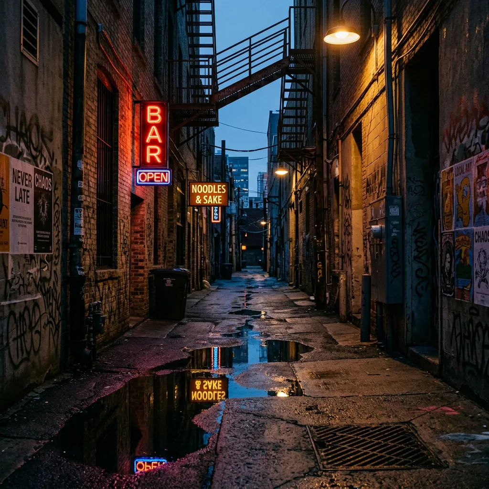

Issue 07 ●Summer 2026Shot after midnight, East Alley

Streetculture
Thirteen pairs, chosen by hand. No hype tax, no restock theatre. Read the issue, then pick your pair.
Read the issue
Thirteen pairs, chosen by hand. No hype tax, no restock theatre. Read the issue, then pick your pair.
Read the issue